Does an axial-attention neural network over a matrix of the last 14 days by 48 half-hours forecast Primary demand better than the Candidate, and does the gain come from the recent days?
Status: finished. Verdict: small gain at the six signed-MW Primaries, no detectable difference at the eight MVA-only Primaries. The pre-registered known-answer gate failed and the maintainer waived it, so every statement about following level shifts is unsupported by a passing known-answer test.
We asked whether a neural network that reads the last 14 days of power, weather, and calendar as a grid of days by half-hours, with attention across days and within a day, forecasts the demand of 16 primary substations (Primaries) better than the Candidate, the two-output demand neural network that experiment 667 backtested over a year. We also asked whether any gain comes from those 14 recent days, by comparing the neural network with an identical copy whose 14 history days are random past days (the placebo). We scored 8 test months (2025-11 to 2026-06) at lead times of 24 to 240 hours, in continuous ranked probability score (CRPS, lower is better) expressed in points of capacity, where one point is 1% of a Primary's capacity. The counted readings keep two groups apart: the six signed-MW Primaries, whose telemetry records power in megawatts with its sign, and the eight MVA-only Primaries, whose telemetry records only apparent power in megavolt-amperes. The remaining two Primaries, D15 and D18, are report-only.
At the six signed-MW Primaries the neural network was better than the Candidate by 0.147 points, and at the eight MVA-only Primaries it was not detectably different. The 98.75% interval of the six signed-MW difference is -0.262 to -0.020. The neural network beat the placebo in both groups, so the recent days carry information a random past day does not. The result is a research result with limits that matter (see "Limitations disclosed"): the neural network is worse than the Candidate at D15 and D18, the interval at the six signed-MW Primaries fails the pre-registered t test on monthly differences, and the history rows use weather analyses that a live service could not build for the days 2 to 5 before the origin.
Verdict
The verdict is "small gain", read from the scorer's pre-registered rule: a small gain at the six
signed-MW Primaries and no detectable difference at the eight MVA-only Primaries. Every number is
the neural network M1 (the arm with frozen pre-trained weather and date-time encoders, selected on
the screen folds as M*) minus the reference, in points of capacity, over the 24 to 240 h band,
from 5 seeds and 8 test months, with a 98.75% interval from resampling whole months. The 98.75%
level is the pre-registered Bonferroni correction across the four counted readings.
| Reading | Group | Difference | 98.75% interval | Reading of the rule |
|---|---|---|---|---|
H1: M1 minus the Candidate C |
the six signed-MW Primaries | -0.147 | -0.262 to -0.020 | small gain |
H1: M1 minus C |
the eight MVA-only Primaries | +0.022 | -0.092 to +0.112 | no detectable difference |
H2: M1 minus the placebo P |
the six signed-MW Primaries | -0.140 | -0.253 to -0.033 | upper limit below zero |
H2: M1 minus P |
the eight MVA-only Primaries | -0.135 | -0.360 to -0.0001 | upper limit just below zero |
The failed t guard is why the six signed-MW Primaries read "small gain" and not "gain". The point estimate (-0.147) is below -0.05 and the upper limit is below zero, but the t interval on the 8 monthly differences at 98.75% (-0.325 to +0.043) covers zero. The bootstrap interval resamples only 8 months, which the Method section shows is too narrow, so the gain at the six signed-MW Primaries is not secured by the more cautious interval. The t guard also fails for the other three counted readings, and H2 at both groups is therefore not secured either.
The mean CRPS of the three headline arms differs by at most 0.2 points within each group. From
seeds 0 and 1 on all 8 folds (one per test month), the mean of the monthly means at the six
signed-MW Primaries is 3.175 for C, 3.030 for M1, and 3.178 for P. At the eight MVA-only
Primaries the mean CRPS is 3.694 for C, 3.724 for M1, and 3.891 for P. Pooled over rows, the
six signed-MW means are 3.203, 3.053, and 3.203, and the eight MVA-only means are 3.704, 3.731, and
3.893.
The pre-registered prediction failed for H1 at the six signed-MW Primaries and held for H2. The prediction was "not supported or inconclusive", with H1 within ±0.06 at the six signed-MW Primaries and within ±0.16 at the eight MVA-only Primaries, and H2 at most -0.10. H1 at the six signed-MW Primaries (-0.147) is outside its range, and the verdict "small gain" is outside the predicted verdict. H1 at the eight MVA-only Primaries (+0.022) is inside its range. Both H2 point estimates (-0.140 and -0.135) are below -0.10.
Every pre-registered guard that applies to a gain holds at the six signed-MW Primaries except the
t guard. The same sign holds for each of the 5 seeds and the noise floor holds. The four guards
for a supported verdict also hold: leaving out one Primary or one month keeps the sign, the q01
and q99 pinball losses are within 0.05 points of the Candidate's, the median error moves with CRPS,
and swap (a) keeps the sign of H1. At the eight MVA-only Primaries, leaving out one Primary flips
the sign of H1, the t guard and the noise-floor guard fail, and the upper bound of the q99
pinball-loss difference from the Candidate is 0.071 points, above the limit of 0.05.
At the eight MVA-only Primaries the pooled difference from the Candidate rests on two Primaries,
D8 and D12, in the 2-seed recomputation. The 5-seed pooled difference is +0.0221 and the 5-seed
leave-one-Primary-out guard flips the sign (both in score/headline.json), but the file does not
name the Primary whose removal flips it. A recomputation from the stored forecasts for seeds 0 and 1
only (24 to 240 h, rows pooled; not stored in a score file) gives a pooled difference of +0.0274.
Leaving out D8 turns that 2-seed difference to -0.004, and leaving out D12 turns it to -0.028. The
neural network is therefore not shown to help the other seven MVA-only Primaries, and no pooled
reading of the eight MVA-only Primaries should be read as an effect on all of them.
The neural network is worse than the Candidate at the two report-only Primaries. From seeds 0
and 1, the mean CRPS over all 16 Primaries is 4.037 for C, 4.191 for M1, and 4.218 for P.
Combined with the group results, M1 minus C at D15 and D18 together is roughly +1.6 points
(a derived difference from the row-weighted group differences, with no interval and not scored
separately). The two short-history
Primaries are 2 of 16, and this loss is the reason production_status is not-for-production.
The secondary era readings R1 to R3 score the forecasts on experiment 709's injected worlds, and a
passing known-answer test does not back them, so the page treats them as descriptive. Era
weighting is by pass (one injection run over the panel of 16 Primaries), not by event as experiment
709 does. The era prediction was that M1 reads a lasting change and is vetoed on a temporary move.
M1 reads the lasting change (-3.23 against the Candidate in the 7 to 28 days after the onset,
below the -1.0 threshold), and the veto fires: after a temporary move ends, M1 is worse than the
Candidate by +1.28 (threshold +0.1). The convolution stem E does not add to M1 in the 7 to 28
day slice (-0.02 against a threshold of -0.30). The neural network therefore follows any level
change, a lasting one or a temporary one, and the pre-registered reading is that the era hypothesis
is not supported as stated.
What the results mean
The 14 recent days carry information that a random past day does not, and the attention in the
trunk adds little beyond a learned read-out over those 14 days. M1 beats the placebo at both
groups (H2), though the t guard fails for H2 and the placebo is itself weaker than the Candidate at
the eight MVA-only Primaries. Arm K has no attention in the trunk and keeps only the similar-day
read-out (a learned weighting of the 14 same-half-hour readings) and the output head. M1 minus K
in CRPS is -0.058 [-0.114, +0.006] at the six signed-MW Primaries and -0.010 [-0.118, +0.106] at the
eight MVA-only Primaries (95%, seeds 0 and 1). The median error of the same contrast at the six
signed-MW Primaries is -0.129 [-0.230, -0.016], so the trunk attention does improve the median
there. Arm A, which removes only the within-day attention, is not worse than M1: M1 minus A
is +0.016 and +0.032, and both intervals cover zero. Arm N, which reads only the target day's row
with no history rows and no power, is much worse (M1 minus N is -0.364 and -0.486).
On experiment 709's injected worlds, the Candidate does not follow a lasting step, and M1, E,
and K beat it by about the same amount. The worlds cover 4 test months and seeds 0 and 1. In the
7 to 28 days after a lasting step begins, CRPS minus the Candidate's is -3.23 for M1, -3.25 for
E, and -2.75 for K. Experiment 709's forecasts with nothing injected (none) match the stored
Candidate forecasts to within 4.7e-06 on the 4 bank folds, so the Candidate's era scores are its
ordinary forecasts. The placebo does not beat the Candidate on this bank (P minus C is about
+0.29 in the same slice). On a temporary move, from the switch to 7 days after the move ends, the
sign reverses: the arms that follow their history are worse than the Candidate (+1.28 for M1).
| Era contrast (CRPS, points of capacity, mean over injection passes) | Lasting step, 0 to 7 d after onset | Lasting step, 7 to 28 d after onset | Temporary move, switch to 7 d after its end |
|---|---|---|---|
M1 minus C |
-0.575 [-0.867, -0.283] | -3.23 [-3.741, -2.723] | +1.28 [+1.08, +1.491] |
E minus C |
-0.722 [-1.029, -0.414] | -3.25 [-3.745, -2.764] | +1.179 [+0.989, +1.378] |
K minus C |
-0.704 [-1.069, -0.344] | -2.753 [-3.163, -2.348] | +0.895 [+0.735, +1.061] |
M1 minus P |
-0.719 [-0.944, -0.503] | -3.521 [-3.898, -3.146] | +1.167 [+0.954, +1.393] |
E minus M1 |
-0.146 [-0.247, -0.047] | -0.02 [-0.157, +0.126] | -0.101 [-0.151, -0.053] |
Era reading R1 at D8, the Primary with logged real events in the era set, is M1 minus C +0.249
[-0.025, +0.582] and E minus M1 -0.091 [-0.228, +0.036], in the same units.
Replacing the history weather with forecast-like weather keeps the gain at the six signed-MW
Primaries. The three history-weather swaps (95%, seeds 0 and 1) are prediction-only checks that
change an input and report H1 again. Swap (a), which gives every history row the ensemble forecast
weather and keeps the 14 trailing-temperature and solar-gain columns, gives M1 minus C of -0.152
[-0.258, -0.048] at the six signed-MW Primaries and +0.028 [-0.070, +0.125] at the eight MVA-only
Primaries. Swap (b), which also zeroes those 14 columns, gives -0.109 [-0.236, +0.010] and +0.234
[+0.079, +0.365], so zeroing the columns raises the neural network's CRPS by about 0.04 points at
the six
signed-MW Primaries and 0.21 at the eight MVA-only Primaries, and the neural network was not trained
for either swap. Swap (c), the Candidate given reanalysis weather at its lag times, changes the
Candidate's CRPS by +0.006 [0.000, +0.012] and +0.001 [-0.002, +0.005].
Figures
The per-Primary and per-fold charts keep the six signed-MW Primaries apart from the eight MVA-only Primaries. The charts use seeds 0 and 1, so their dots differ from the 5-seed headline. The per-Primary intervals resample the 8 months. The per-fold intervals resample origin days, whose 24-to-240-hour forecast windows overlap, so the per-fold intervals are too narrow.
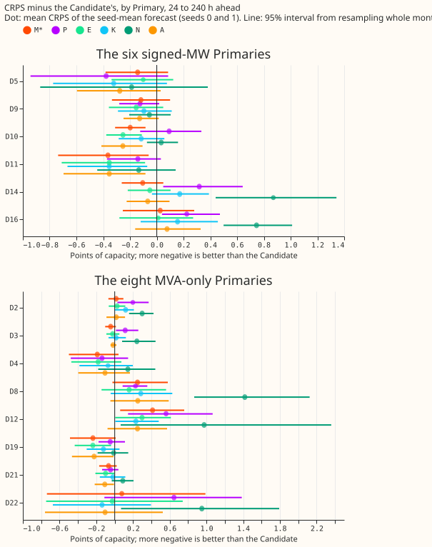
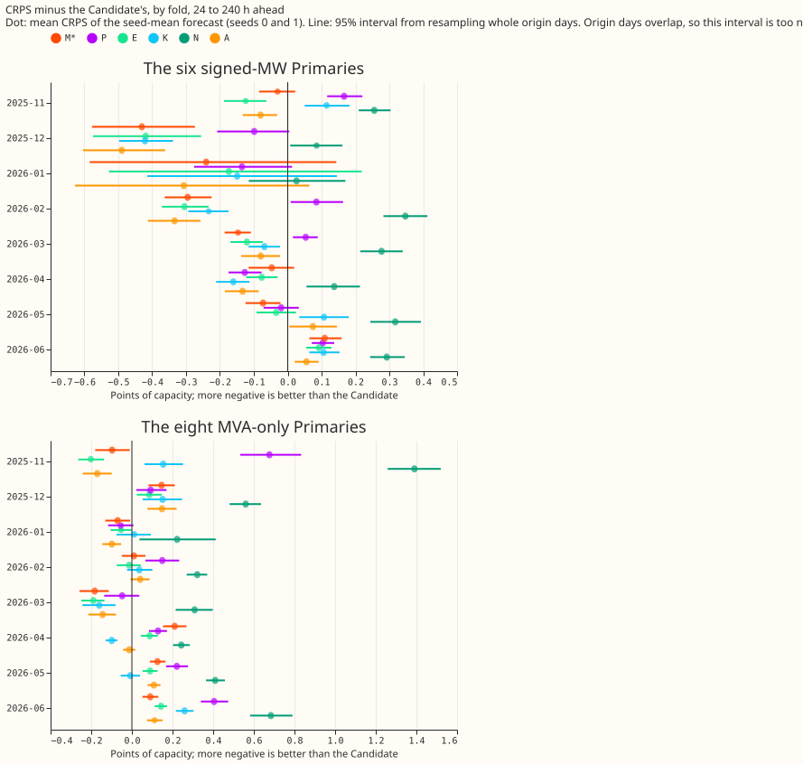
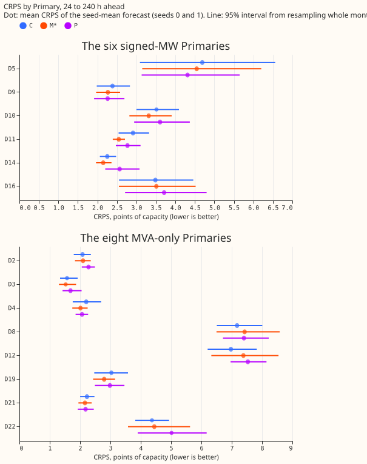
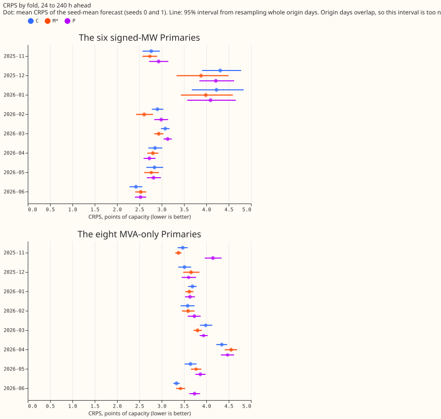
Day-ahead and 14-day forecasts of a winter origin (January 2026) at D5, a signed-MW Primary, and
of a summer origin (June 2026) at D19, an MVA-only Primary, show the median and the 50% and 90%
bands of the Candidate, M*, and E against the measured power.
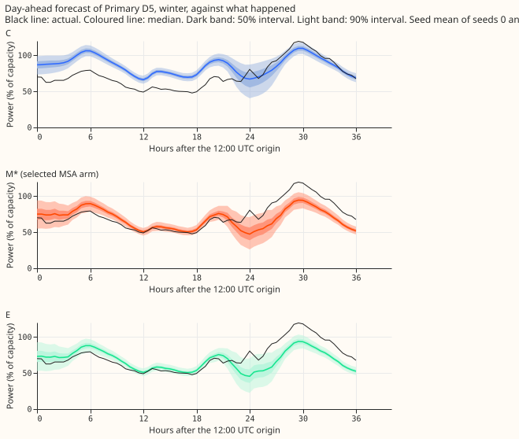
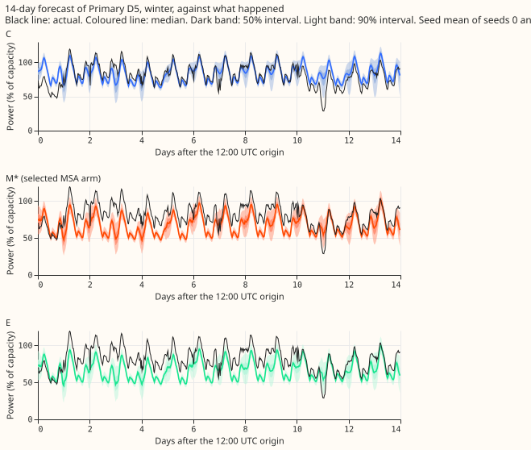
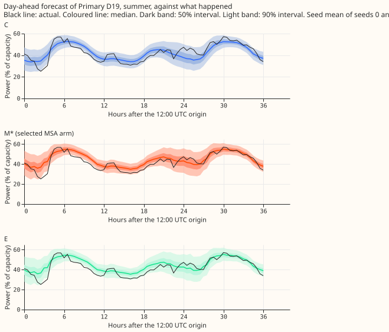
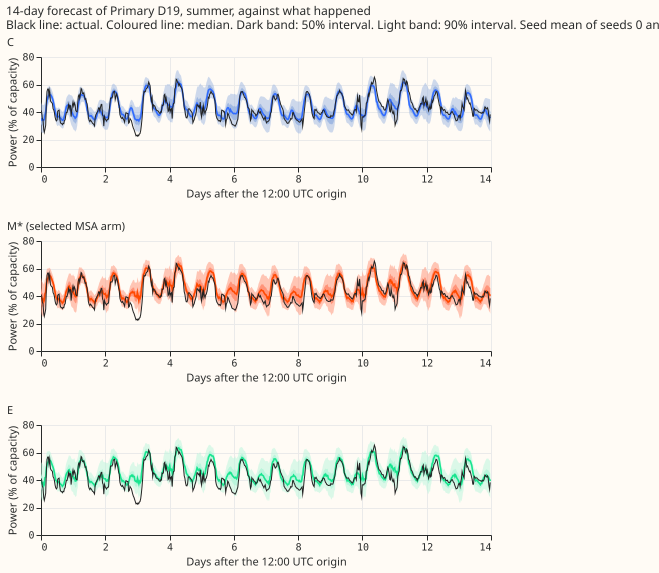
Three load shifts in NGED's logs at signed-MW Primaries and three at MVA-only Primaries show the
forecasts of M* and the Candidate for the next 24 hours from each origin day against the measured
power.
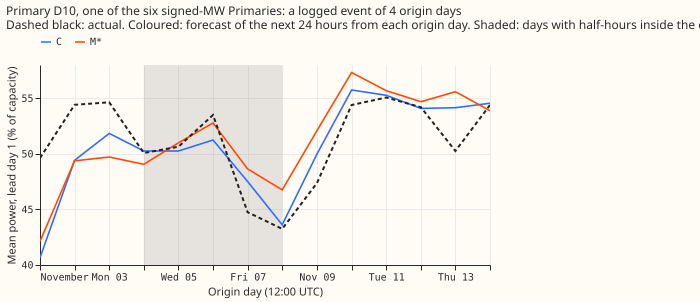
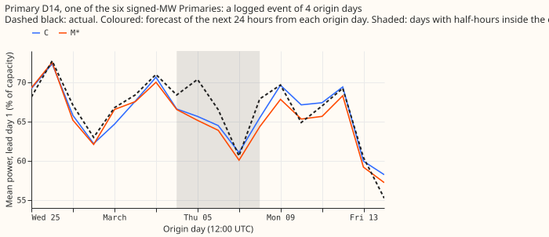
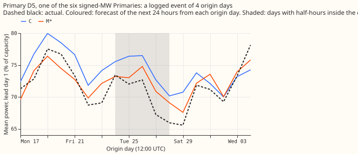
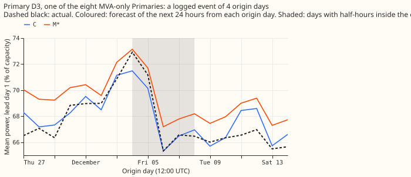
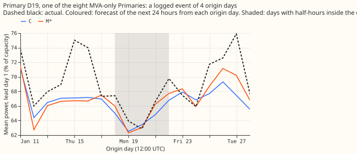
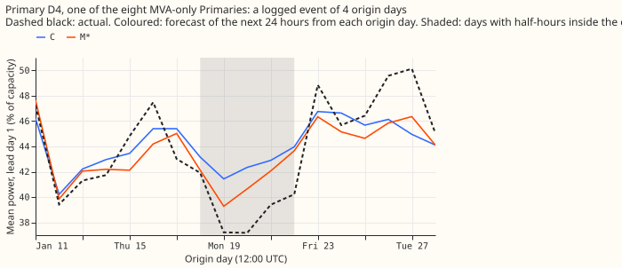
Injected worlds show the neural-network arms and the Candidate on a lasting step and on a temporary move, with the onset marked.
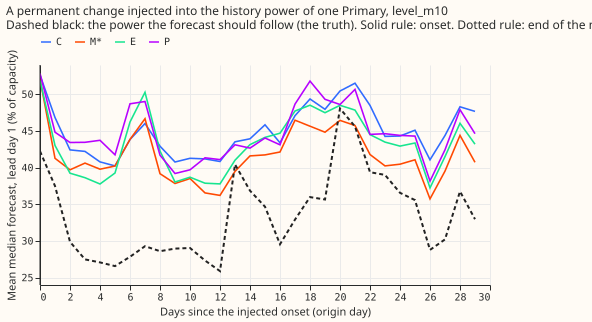
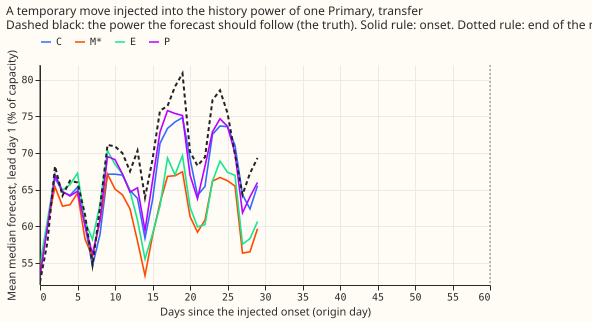
In the 2026-01 fold at seed 0, the across-day attention of M1 and E does not favour rows that
share the target's weekday, and P shows the same lack of preference. These charts read the saved
weights of M1, E, and P with the forecast unchanged, on one fold (the 2026-01 test month) and
seed 0. The weight on the target row itself is 0.048 for M1, 0.084 for E, and 0.039 for P at
lead day 1. Averaged over all 16 Primaries (including D15 and D18, which the scoring leaves out),
every test origin, every half-hour, and the 4 heads, each of the 14 history slots takes between 0.05
and 0.09 of the weight (a uniform spread over the 15 rows would give 0.067). The rows with the
target's weekday take 13.7% of the history weight in M1 at lead day 1 (14.5% at lead day 7), 12.8%
in E (14.4%), and 14.3% in P (14.3%). Two of 14 rows is 14.3%, so none of the three networks
puts extra weight on the rows with the target's weekday.
M1 and E give the most recent rows the most weight, and the weekday rows differ from their
neighbours by at most 0.007 at lead day 1. At lead day 1, M1 falls from 0.083 at slot 1 to
0.056 at slot 12, and E from 0.085 to 0.054, whereas P, whose slots are placebo rows with no
age order, runs from 0.058 to 0.077. Because of that gradient, the comparison with neighbouring
slots is firmer than the comparison with a uniform spread. In M1, slot 6 (the first weekday row)
takes 0.0725 against 0.0732 and 0.0684 at slots 5 and 7, and slot 13 (the second) takes 0.0582
against 0.0562 and 0.0651 at slots 12 and 14. In E, slot 6 takes 0.0642 against 0.0667 and
0.0647, and slot 13 takes 0.0535 against 0.0535 and 0.0605.
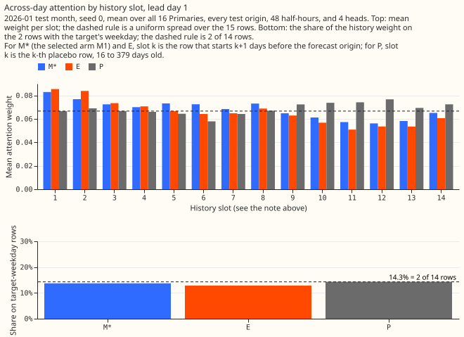
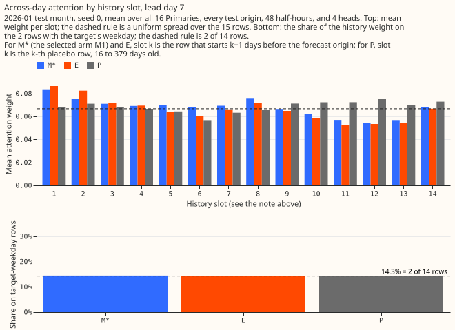
Single cases show more structure than the average, and the structure differs between cases.
Each case is one origin and one Primary, chosen for display only on outcomes the network never
reads: an origin whose next-day actual has a large half-hour change (case A), and the origins with
the highest (case B) and the lowest (case C) mean reanalysis shortwave over the target day at D5.
On the clear day (case B), M1 and E put their largest weights on slots 2 and 6 over the first
12 half-hours of the target day (0.20 on slot 2 in both, and 0.24 and 0.21 on slot 6). Slot 6 is
the row with the target's weekday, so this one forecast does favour it, while the average over
origins does not. P puts its largest weights on slots 3, 14, and 7 over the first 12 half-hours
of case B, and over the whole day on slots 11, 3, and 8. In case A the largest M1 weights fall
on slots 3, 8, and 5, and in the dull day (case C) on slots 14, 11, and 12, so no single row
dominates across cases. The cases are three origins, and each is a single forecast.
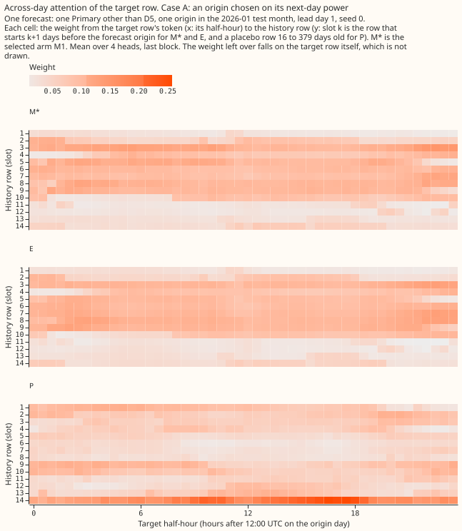
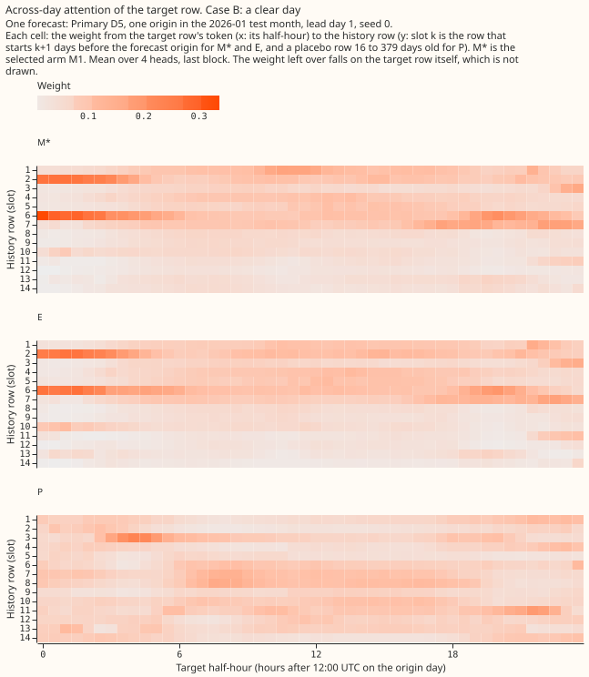
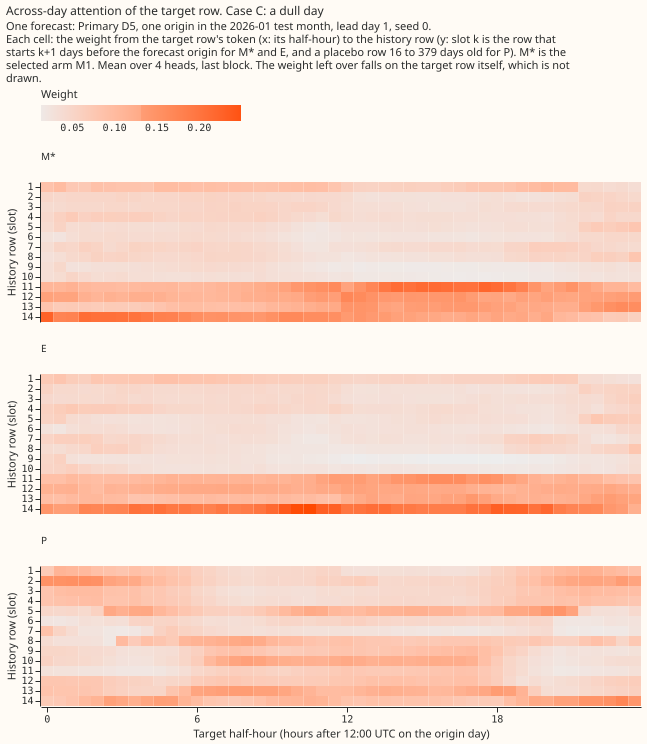
Checks
- The attention extract reproduces the scored forecast. For each of the 3 cases of
M1,E, andP, the extract's quantiles (the 11 quantile columns) differ from the stored forecast of the same arm, Primary, origin, and valid times by at most 1.6e-06 (the largest of 9 differences; limit 1e-4), and the forecast with the attention returned is bit-identical to the forecast without it. The runner logs areattention_extract_{M1,E,P}_2026-01_s0.logunderwork/logs/in the private data folder. A smoke test with an untrained network ran before the one-line device-index fix of the GPU memory cap was committed, so it ran on uncommitted code. The real extract ofM1also ran just before that commit, and the real extracts ofEandPran after it. The fix changes only the function that sets the GPU memory cap, and the 1.6e-06 match includes theM1extract. - Median minus mean forecast, per site. For
M1at seed 0, averaged over all leads of 0 to 14 days, the median sits between 0.96 points of capacity below and 0.20 above the mean forecast at the 14 scored Primaries, and 1.99 below at D15. The report script prints 10 of the 16 Primaries; D12 (-0.96) and D15 (-1.99) are among the hidden rows. The spread shifts the median at D12 and D15, so their CRPS may be affected. - CRPS and the error of the median disagree at two contrasts.
EminusM1at the six signed-MW Primaries is 0.000 in CRPS and -0.009 in normalised median error.M1minusCat the eight MVA-only Primaries is +0.027 in CRPS and -0.035 in median error (95%, seeds 0 and 1): the median is slightly better and the upper tail is worse, which matches the failed q99 guard. - Audit triggers. Audit triggers 1 to 5 fired. The Opus audit
(
briefs/msa_architecture/audit_713.md, in the private data folder) found no implementation fault that changes a headline number, a reading, or the verdict. Trigger 1 (a control fails) fired because the known-answer gate was waived after its checks KA3 (armMmust follow an injected level step) and KA12 (armGmust follow the step within 0.05 of armM) failed. Trigger 2 (a result contradicts its prediction) fired for H1 at the six signed-MW Primaries. Trigger 3 (CRPS and the error of the median point in different directions) fired at the two contrasts above. Trigger 4 (leaving one Primary out flips a sign) fired at the eight MVA-only Primaries. Trigger 5 (a nested arm beats the arm that contains it) fired because armA, which lacks the within-day attention, scores better thanM1(M1minusAis +0.016 and +0.032). Trigger 6 needs a by-hand comparison with the interval widths of experiments 667 and 709, which was not done, and trigger 7 (a later experiment's design depends on this unreplicated result) waits on a decision by the maintainer. - No weather look-ahead.
e00713_weather_lookahead.pylists, for one origin, the weather source and issue time of every row. The target row uses the 00Z run of the European Centre for Medium-Range Weather Forecasts (ECMWF) ensemble issued before the origin. No history row carries weather valid after the contract origin. The audit found no look-ahead and no power leakage across the cutoff. The history rows use the ERA5 reanalysis and Copernicus Atmosphere Monitoring Service (CAMS) analyses, and the history rows of ages 2 to 5 days could not be built in a live service, so every H1 reading is a ceiling for a live forecast. - Scorer edits after the audit. Three edits followed the audit: the tail guard takes each row's month inside each join; the swap-(a) guard flag and the median-error guard flag compare with the sign of H1 rather than with a gain; and the scorer appends the Candidate's era reference once per pass. The era, swaps, and headline scorers were rerun after an Opus code review. No interval, reading, or verdict changed, and two guard flags at the eight MVA-only Primaries changed (swap (a) keeps the sign of H1, and the median error does not move with CRPS).
- Seed reproduction. The Candidate's seed 0 refitted for 2025-11 reproduces the stored forecast to a maximum absolute difference of 7.4e-05 against a threshold of 1e-3. No other fold was checked.
- Capped reruns. Arm
Phit the 60-pass stage-1 cap in 4 of its 40 fits and was rerun at the 120-pass cap, which makes H2 conservative and leaves H1 untouched.
Limitations disclosed
- The known-answer gate failed and was waived. KA3 failed: the follow share of arm
M, the fraction of an injected level step by whichMmoved its median, is 0.142 against the 0.75 needed. KA12 failed on armG. Every statement about following level shifts, and the era readings R1 to R3, is unsupported by a passing known-answer test. - The neural network is worse than the Candidate at D15 and D18, and the page does not score those two Primaries separately. The 16-Primary pooled means are given in the Verdict section.
- The comparison of follow shares between the Candidate and
M1on experiment 581's bank of injected level steps was planned and could not be run. The Candidate's stored files under experiment 667 hold experiment 650's random events, not experiment 581's bank. On 6 of 8 folds the forecasts ofM1on that bank also include origin days before the fold's first day, so the two follow shares would not be on the same origins. A new inject job that passes experiment 581's bank through the Candidate's saved weights would make the comparison, and is a possible later experiment. The follow share ofM1on that bank is not scored on this page. The filter that drops origins with no ensemble row drops 24 to 48 of 160 origins per pass on all 8 folds. - Era weighting is by pass, not by event. Experiment 709 weights by event. The audit argues the point estimates agree whenever no pass has an empty slice, and did not compute both weightings.
- Several pre-registered report-only readings are not on this page. These are the climatology,
manual heuristic, and BG2 rows; the four load-shift scenarios (all rows, outside events, inside
events, and the 7 days after an event); coverage at q01, q05, q95, and q99; mean band width; the
day-1 and days 11 to 14 lead bands; the cold-winter-night, winter, and time-of-day slices;
threshold-weighted CRPS; avoidable curtailment cost; and the actual GPU hours. The median error
appears beside CRPS for the report-only contrasts in
report_only.jsonand for the two contrasts named under Checks. - The design's read-out of the across-day attention weights before and after an injected permanent
change (design section 6.5) was not built. The attention maps above cover one fold (2026-01),
seed 0, and the arms
M1,E, andP. They do not show attention on injected worlds, and the mean weights cannot tell whether the attention of a single origin follows a step. - The input sets differ. The Candidate reads neighbour summaries and a table of expected inputs that the MSA neural network lacks, and the neural network reads 14 days of power and reanalysis history weather. The difference between the groups may come from inputs rather than architecture.
- Further scorer limitations. (1) The headline scorer needs about 20 GB of host memory. (2) No
normalised median-error or band-width contrast stands beside H1 and H2 at the pre-registered
level. (3) Audit triggers 1 and 5 print only in part, and
swaps.jsonis not printed by the report script. (4) The hash print of design section 5.3 for the Candidate's seeds 2 to 4 is missing. (5) The 17 to 28 day slice of design section 1.10 is not implemented. (6) The era scorer does not enforce the known-answer check KA11, though KA11 passed for all 4 bank folds (maximum difference 0.0). (7) The leave-one-Primary-out and leave-one-month-out tests read "does the sign stay negative", which is the right test for a gain and the wrong label for a loss. (8) ArmGwas not fitted on the real folds. - Seed counts. Arms
A,K,N, andEhave seeds 0 and 1 only, and their contrasts are at 95%. The headline armsM1,P, andChave 5 seeds.
Lessons
- Score a learned read-out over the history rows, with no trunk attention, before crediting
attention. Arm
Kis within 0.06 points ofM1at both groups in CRPS, though the trunk attention improves the median error at the six signed-MW Primaries. - Score changes at the eight MVA-only Primaries per Primary before pooling. In a 2-seed recomputation, two Primaries, D8 and D12, hold the sign of the pooled difference (seeds 0 and 1).
- Do not credit attention for a lasting-step gain until the control arms are scored.
KandEgain about as much asM1on the era bank. - Diagnose a known-answer gate that the neural network keeps failing before running the real
folds. The follow share of arm
Mstayed at 0.01 to 0.14 against 0.75 through four gate runs. - Score the two short-history Primaries, D15 and D18, beside the groups. Their loss is hidden by the group readings.
The known-answer gate has failed four times
The gate trains networks on a synthetic world with a known answer, and arm M must follow a level
step that appears in the history rows. The check is KA3: in synthetic world W1, arm M must move
its median by at least 0.75 of a step of 0.30 of capacity (the follow share). Arm M has never come
near that figure. All four results stay on this page, each with the commit that produced it. An
earlier attempt at fd76ccb09 crashed at KA6 (a CUDA index error in the canary, before any check
produced a result), so it is not a gate result. Commit 3ac110652 fixed the canary.
| Run | Commit | Failed checks | Numbers | Cause found |
|---|---|---|---|---|
| First gate run (J1) | 3ac110652 | KA2, KA3, KA10, KA12 | Arm N mean absolute error 0.0476 against a limit of 0.02; follow share of M 0.0348; |M − P| 0.0166 against 0.005; follow share of E −0.0197 |
The read-out's two query and key maps both started at zero, so neither trained |
| Rerun 2 | eb1942601 | KA3 | Follow share of M 0.0099 |
The trained network barely read the lead day |
| Rerun 3 | 90b9de2c8 | KA3 | M 0.0186, E 0.1268, G 0.0005, P −0.00007, N 0 |
KA2, KA4, KA5, KA6, KA10, and KA12 passed |
| Amended gate | 94dfb9652 | KA3, KA12 | M 0.1418 at the best-validation state; G 0.0395 against the KA12 limit of M − 0.05 = 0.0918 |
KA2, KA4, KA5, KA6, and KA10 passed |
The first fault was a bug, which the first gate run found and amendment 1 fixed. The read-out's
query map W_q and key map W_k both started at zero, so each gradient (proportional to the other
map) stayed zero and the read-out never trained. The query map now has the default random
initialisation, the key map stays at zero, and the untrained network is unchanged (KA1 holds). A new
check fails on the old initialisation. The fix changes every real fold's network, because the
read-out now trains there too.
The second fault was a weak lead-day path, which amendment 2 (design_amendment_2.md) addressed
after an audit. The lead day entered only as an embedding on the target row's tokens. In the
audit, the embedding shrank to a mean length of 0.08, and moving the lead day from 1 to 14 changed
the median by 0.012 standardised units against a step of 2.1. Amendment 2 adds the one-hot lead day
to the read-out query and to the head's input, 1,344 parameters in all, with no effect at the start.
Rerun 3 followed, with a follow share of M of 0.0186.
Amendment 3 (design_amendment_3.md) raised the budget of the synthetic fits only, and the
amended gate still failed. The synthetic fits ran at most 400 passes with a patience of 30, where
they had run 150 and 8. The real folds' budgets and every threshold were unchanged. The amendment
came from a diagnostic on the same synthetic world W1 that the gate uses, so it was a post-hoc
change of the gate's budget. The amended gate stopped every fit by early stopping before the cap: W1
M at pass 193, P at 205, N at 257, E at 175, G at 199, and W0 M at 350. It took 67
minutes on one GPU, with a peak of 5,090 MiB.
Scored at the pre-registered state, the best-validation state of each fit, the amended gate fails
KA3 and KA12. The follow share of arm M is 0.1418 against 0.75. In KA12, arm G reaches 0.0395,
below M minus 0.05 = 0.0918, so the check fails. Experiment 713 therefore failed its
pre-registered known-answer gate.
Secondary readings, which never gate. The final-pass follow shares of the W1 fits are 0.1117 for
M, 0.2154 for E, and 0.0297 for G. The follow share of M, read every 20 passes, ranged from
0.005 to 0.189 with no trend, so a single reading is weak evidence either way. These readings were
recorded before the run as labelled secondary readings, and none of them is used for the pass or
fail decision. The best of them, 0.2154 for E, is also below 0.75.
The audit of the gate found no implementation fault. ka3_audit.md (in
data/ml-experiments/briefs/msa_architecture/, an Opus audit) checked the gate and its scorer with
oracles: a hand-set read-out on the newest history row scores 0.936, and rules that follow the step
score 1.000 through the same scorer, so the follow share can reach 1. The audit found that the
history path trains and that the network can read the step. The trained network learns to follow the
step late, and the validation loss does not reward following: arm M reaches a worse validation
loss than the placebo P in W1. So the failure is a finding about what this network learns on this
training budget, and the test is correctly specified.
Diagnostics after the failed gate, which are not a gate result
Six diagnostic fits and four replications followed the failed gate. They are diagnostics only,
they gate nothing, and they support no claim that the gate is passed. Each run is a single
trajectory of arm M in synthetic world W1, with the code hash e85b84e2ea04b3cb (the hash
before the docstring rewrap described below), a cap of 400
passes, and no confidence interval. The variants changed the gradient-clip norm (1.0 or 10) and the
learning rate of the lead-day parameters only (the lead-day map w_lead, the lead embedding, and
the head's 14 lead-day input columns), by a factor of 1 or 10. The first six rows ran at training
seed 0 on world seed 0, the world that amendment 3 was derived from. V0 reproduces the amended gate.
The multiplier of 10 was chosen on that same world and seed, after seeing its result, so the first V2 figure is an optimistic selection. The four replications changed the training seed or drew a fresh world (world seed 1000, never used before and not used to choose the multiplier). The fixed table of weekday-by-half-hour effects kept its own seed in every run.
| Run | Change from the amended gate | Training seed | World seed | Follow at the best-validation state | Follow at the final pass |
|---|---|---|---|---|---|
| V0 | None (the amended gate) | 0 | 0 | 0.142 | 0.112 |
| V1 | Clip norm 10 | 0 | 0 | 0.024 | 0.276 |
| V2 | Lead-day learning rate × 10 | 0 | 0 | 0.806 | 0.685 |
| V3 | Clip norm 10 and lead-day learning rate × 10 | 0 | 0 | 0.586 | 0.787 |
| V0N | None, no early stopping (400 passes) | 0 | 0 | 0.129 | 0.236 |
| V2N | Lead-day learning rate × 10, no early stopping (400 passes) | 0 | 0 | 0.820 | 0.395 |
| Rep1 | As V2 | 1 | 0 | 0.857 | 0.815 |
| Rep2 | As V2 | 2 | 0 | 0.377 | 0.649 |
| Rep3 | As V2 | 0 | 1000 | 0.454 | 0.368 |
| Rep4 | As V0 | 0 | 1000 | 0.063 | 0.185 |
Arm M reached the 0.75 threshold at the best-validation state on 2 of the 4 runs that used the
lead-day multiplier (V2 and Rep1), and missed it on the other 2 (Rep2 and Rep3). The follow share
at the
best-validation state varied from 0.377 to 0.857 across training seeds and worlds, and the
unmodified baseline gave 0.142 and 0.063. The no-early-stopping runs followed more than 0.9 at some
passes (0.912 for V0N, 0.929 for V2N), but their best-validation states stayed at 0.129 and 0.820,
so the state that validation loss picks is a noisy selector of the follow share.
No amendment was made, and the gate remains failed. The maintainer's decision follows below.
The diagnostics concern one family of synthetic worlds, one fold, and single runs, so
they say nothing about the real folds. The options that follow from them, with the reasons, are in
gate_options.md and the two diagnostic reports (diag_option5/README.md and
diag_option5/replication/README.md), in data/ml-experiments/briefs/msa_architecture/.
The maintainer waived the gate
On 2026-11-23 the maintainer decided, in these words: "Go ahead with option 1". Option 1 of
gate_options.md is to waive KA3 for the real folds and disclose the failure. The waiver changes
no threshold. The gate file work/known_answers_passed.json is written by a separate script,
e00713_waive_gate.py, with waived: true, the failed checks (KA3 and KA12, with their values at
the
amended gate, commit 94dfb9652), the passed checks (KA2, KA4, KA5, KA6, and KA10), the decision
quoted above, the date, the code record, and the sha256 of e00713_known_answer.py. The script
refuses to write the file unless the stored last-run results show exactly KA3 and KA12 failing and
the code hash equals e85b84e2ea04b3cb, and the sha256 of the last-run file and of
e00713_known_answer.py equal the values pinned in the script. The fit scripts still check the code
record of the gate file, so a waived gate written under one code hash is refused under another. The
report script prints the waiver and fires audit trigger 1 (a control fails).
The code hash of the fit modules changed from e85b84e2ea04b3cb to 30951d79ab4d869a when the
docstring lines of the experiment's scripts were rewrapped, and the fits were run at the old
hash. The hash is the first 16 characters of a SHA-256 over the bytes of the fit modules
(arms.FIT_CODE_FILES) and the hashes of the imported recipe modules, so any edit to a docstring
changes it. The gate file and the stage 3 logs of arms M1, E, and P record e85b84e2ea04b3cb.
The rewrap changed docstring text only: the abstract syntax tree of each changed script, with its
docstrings removed, is identical before and after (proof script and output in
briefs/msa_architecture/lint_rewrap_proof/ in the private data folder). Ten docstrings were
reworded, not only rewrapped, because their first sentence was too long for one line: the module
docstrings of e00713_smoke.py and e00713_token_diagnostic.py, and the docstrings of
contrast_cells and cmd_contrasts in e00713_figures.py, cmd_headline and cmd_swaps in
e00713_score.py, audit_triggers and median_minus_mean in e00713_report.py,
limit_gpu_memory in e00713_attention.py, and run_frame_timing in e00713_inputs.py. Each
keeps its meaning.
No fit was rerun, and four scripts now refuse the stored states. e00713_attention.py extract
hard-codes no accepted old hash and has no --accept-code-change flag, so it refuses outright.
e00713_fit.py checks the gate file first, so a resume needs --accept-gate-change
e85b84e2ea04b3cb as well as --accept-code-change e85b84e2ea04b3cb. e00713_predict.py refuses
a stage 3 log with another code hash unless --accept-code-change names the old hash.
e00713_waive_gate.py would refuse to write the waiver again, because it pins the old hash and
also pins the sha256 of e00713_known_answer.py, which changed from 8fa3cfbdac29 to b90bd59cf987.
e00713_attention_proof.py now exits with status 1, and all 48 stage 3 logs it reads print
DIFFERS.
Option 1 as written covers KA3 only, and the waiver covers KA12 as well. KA12 also failed at the
amended gate: arm G followed 0.0395 against the limit of arm M minus 0.05 = 0.0918, so the stem
of arm G did not follow a step within 0.05 of arm M, which bears on the stem readings of R2 and
R3. The manager relayed the maintainer's verbatim "Go ahead." in answer to a question that included
KA12 (G 0.039 against 0.092). The quoted decision above is unchanged, and the waiver record
carries both statements.
Option 1 carries its own risk: a null result on the real folds may come from the slow learning the
gate found. The gate and the option-5 diagnostics showed that early stopping on validation loss
can end training before arm M learns to read a step. An H2 near zero then cannot separate "the
recent days carry little" from "the training budget stops before the read-out learns to use them",
as the gate and the option-5 diagnostics showed in synthetic world W1. The waiver does not remove
that ambiguity, and a null H2 therefore does not close the line without this caveat.
Operator caution: a full rerun of e00713_known_answer.py deletes the gate file, waived or not.
The waiver script must be run again after a rerun, and it refuses when the last-run results are not
those of the amended gate.
The known-answer gate was waived by the maintainer on 2026-11-23 (design amendment 4), after it failed KA3 and KA12. The era secondary set R1 to R3 and any statement about following level shifts are therefore reported as unsupported by a passing known-answer test, and every verdict, headline, and take-home message of this experiment carries that fact.
Pre-registered contrasts
There are two counted contrasts, each at two groups of Primaries, so four counted readings, each read at 100 × (1 − 0.05 / 4) = 98.75%. Each contrast is the treatment minus the reference in CRPS on the headline band, with seeds 0 to 4 of both arms. The six signed-MW Primaries are D5, D9, D10, D11, D14, and D16. The eight MVA-only Primaries are D2, D3, D4, D8, D12, D19, D21, and D22, and every number for them carries the label "reactive power assumed zero".
| Id | Contrast | Question |
|---|---|---|
| H1 | M* minus C |
Does the MSA network beat the Candidate? |
| H2 | M* minus P |
Do the 14 most recent days carry the gain (real minus placebo)? |
Report-only readings, at 95%, on seeds 0 and 1 of both arms:
M*minusA(named H3: does the within-day attention matter?).M*minusK,KminusN, andM*minusN.EminusM*, andGminusM*when armGis fitted.- The pairwise differences among
M1,M2, andM3on the screen folds. - Every contrast for all 16 Primaries pooled, and for D15 with D18.
- Every contrast by lead band, by Primary, with one Primary left out, and with one month left out.
- The normalised mean absolute error (MAE) of the median beside every CRPS contrast.
Arms
| Arm | What the arm is | Fitted or stored | Seeds |
|---|---|---|---|
C |
The Candidate P7+D50 of experiment 667: two power lags, neighbour summaries, table T, mixture head |
Seeds 0 and 1 stored; seeds 2 to 4 refitted into a new root | 0 to 4 |
M1 |
MSA network; weather and date-time encoders loaded from the Candidate chain's pre-training and frozen in every stage | Fitted | 0, 1 (screen folds) |
M2 |
As M1, with the loaded encoders trained in every stage |
Fitted | 0, 1 (screen folds) |
M3 |
As M1, with the encoders initialised at random and trained in every stage |
Fitted | 0, 1 (screen folds) |
M* |
The arm among M1, M2, and M3 with the lowest held-out validation loss |
Selected, then fitted on all 8 folds | 0 to 4 |
P |
M* with its 14 history rows replaced by 14 random past days of the same Primary (the placebo) |
Fitted | 0 to 4 |
A |
M* without the within-day attention (across-day attention and read-out kept) |
Fitted | 0, 1 |
K |
M* with both trunk attentions replaced by the identity: the read-out and the head only, a learned kernel over the 14 same-half-hour readings |
Fitted | 0, 1 |
N |
M* with the top row only: no history rows, no power |
Fitted (about 2 minutes) | 0, 1 |
E |
M* with a 1-D convolution stem over the 48 half-hours of each history row; secondary |
Fitted | 0, 1 |
G |
M* with a recurrent stem in place of the convolution stem; secondary and optional |
Fitted only if the compute plan allows | 0, 1 |
This page says "within-day attention" and "across-day attention" and not AlphaFold's "row attention" and "column attention", because the two names are easy to swap. Within-day attention lets the 48 tokens of one day attend to each other. Across-day attention lets the 15 tokens at one half-hour attend to each other across days.
Removing the trunk's across-day attention does not give arm N. The similar-day read-out
(Method, architecture) is itself a path across days, so a network whose trunk does nothing is still
a learned kernel over 14 same-half-hour readings with a weekday prior. Arm K is that network.
M* minus K says what the axial trunk adds to the read-out, and K minus N says what the
read-out adds to the top row alone.
Reference rows, never refitted: the month-by-half-hour climatology
(baseline_forecasters.climatology.ClimatologyForecaster, trained on each fold's training window),
and the manual heuristic and BG2 where stored rows cover the scored keys. The scorer states which
reference rows are missing.
Decision rule
Each group is read on H1, with D the point estimate and [L, U] the 98.75% bootstrap interval. The group's reading is the first row that holds. The three guards are the t guard (the t interval on the 8 monthly differences of the seed-averaged forecasts, at 98.75% with 7 degrees of freedom, excludes zero on the side the bootstrap interval does), the seed guard (the contrast has the same sign for each of the 5 seeds taken alone), and the noise-floor guard (the point estimate is at least twice the seed-noise standard error at 5 seeds, 0.034 at the six signed-MW Primaries and 0.090 at the eight MVA-only Primaries).
| Order | Group reading | Condition |
|---|---|---|
| 1 | clear loss | L > +τ, and all three guards hold |
| 2 | loss | L > 0, and all three guards hold |
| 3 | gain | U < 0, D ≤ −τ, and all three guards hold |
| 4 | small gain | U < 0, and the seed guard holds for at least 4 of the 5 seeds |
| 5 | no detectable difference | L > −δ and U < +δ, with δ = 0.06 at the six signed-MW Primaries and 0.16 at the eight MVA-only Primaries |
| 6 | cannot tell | anything else |
The smallest gain worth porting is τ = 0.05 points of CRPS. The protocol's highest tier is 0.03,
for a new head. The MSA neural network replaces the Candidate's whole neural network and its input
pipeline, and a live
service would need a replacement for ERA5 on the 4 newest history rows, so the threshold is set
above that tier. The experiment is kind: other, because the Candidate is not the Primary demand
research default, so the threshold belongs to this plan.
The experiment's verdict is the first row that holds.
| Order | Verdict | Condition |
|---|---|---|
| 1 | refuted |
"clear loss" in either group |
| 2 | not supported |
"loss" in either group; or "no detectable difference" in both groups |
| 3 | supported |
"gain" in both groups, H2's upper limit below 0 in both groups, and every supported guard holds |
| 4 | partly supported |
"gain" in one group and no "loss" in the other; or "gain" in both groups with H2's upper limit at or above 0 in a group, or with a supported guard failing |
| 5 | small gain |
"small gain" in at least one group, with no "gain" and no "loss" in either group |
| 6 | inconclusive |
anything else |
Reading 4 follows the ml-experiment skill: an interval that excludes zero in the predicted
direction but falls under the threshold, or is not secured at the threshold, is small gain and
never inconclusive. Reading 5 uses the detectable difference δ and not τ, because an interval
inside ±0.05 is out of reach with 5 seeds and 8 months. The write-up words reading 5 as "a
difference larger than 0.06 (0.16 at the eight MVA-only Primaries) is ruled out; a gain of 0.05 is
not".
The guards for supported are these four: the sign of H1 holds with each Primary left out in
turn and with each month left out in turn; the q01 and q99 pinball loss of M* is within 0.05 of
the Candidate's in each group (one-sided 95%); the normalised MAE of the median moves the same way
as CRPS; and H1 keeps its sign in swap (a) of "Three checks on history weather".
H3, M* minus K, and K minus N change no verdict. They say which part of the network did
the work, and they choose the follow-up.
Stop rule for the line. A verdict of not supported or refuted closes the last-14-days axial
line, so the 28-row layout (a follow-up with 14 target rows and 14 history rows) does not run. A
retrieval follow-up, which picks the 14 history rows by similarity to the target day, may still run
after not supported, but only when H2 is clearly negative and M* is not clearly worse than C,
because retrieval tests a different source of information.
What the design cannot do. τ is below the detectable difference δ in both groups. A true gain
of exactly τ will most often read small gain or inconclusive, and a tie can be read as "no
difference larger than δ", never as "no difference larger than τ".
Detectable effect
With 5 seeds per arm, the design can detect a difference from the Candidate of about 0.06 points
of
CRPS at the six signed-MW Primaries and 0.07 to 0.16 at the eight MVA-only Primaries, and no
smaller. The two stored seeds of the Candidate alone would resolve only 0.09 at the six signed-MW
Primaries and 0.11
to 0.25 at the eight MVA-only Primaries, which is why the Candidate is refitted for seeds 2 to 4. A
gain of the size
that experiments 699, 709, and 711 failed to resolve (0.03 to 0.07) may still end inconclusive or
small gain here.
The calculation scores the Candidate's two stored seeds over the 8 folds, on the headline band, with valid times from 2026-07-01 dropped. The seed-noise standard error of a contrast between two arms with n seeds each, over 8 months, is the monthly standard deviation of seed 0 minus seed 1 divided by √(8n). The detectable difference δ is 3.48 standard errors (99.17% two-sided, 80% power). It assumes the MSA arm is as noisy as the Candidate.
| Group | CRPS of the seed-mean forecast, pooled over rows | The same, mean of the 8 monthly means | Mean over months of seed 0 minus seed 1 | Standard deviation of that difference over 8 months | Half-hours |
|---|---|---|---|---|---|
| The six signed-MW Primaries | 3.203 | 3.175 | +0.001 | 0.108 | 611,055 |
| The eight MVA-only Primaries | 3.704 | 3.694 | +0.059 | 0.285 (0.136 without 2025-11) | 816,768 |
| D15 and D18 | 8.106 | 8.002 | +0.127 | 0.974 | 203,040 |
| Seeds per arm | Standard error, six signed-MW Primaries | Standard error, eight MVA-only Primaries | Detectable δ, six signed-MW Primaries | Detectable δ, eight MVA-only Primaries |
|---|---|---|---|---|
| 2 | 0.027 | 0.071 (0.034) | 0.094 | 0.25 (0.12) |
| 5 | 0.017 | 0.045 (0.022) | 0.059 | 0.16 (0.07) |
One seed of the Candidate failed in fold 2025-11 at the eight MVA-only Primaries (CRPS 3.955 against 3.263 for the other seed, seeds 0 and 1 over 24 to 240 h), which doubles the eight MVA-only Primaries' seed noise. The stored arm is used as it is. The figures are lower bounds, because they leave out the month-to-month variation of the true difference, which the month-block bootstrap and the t guard add. The decision rule uses δ = 0.06 at the six signed-MW Primaries and 0.16 at the eight MVA-only Primaries. Known-answer check KA8 requires the implementer's scorer to reproduce the first table.
Screen, and the choice of M*
The screen follows the standing practice: four folds first, every number labelled interim. The
screen folds are 2025-11, 2026-01, 2026-03, and 2026-06, with seeds 0 and 1, for M1, M2, and
M3. The Candidate's stored forecasts match the screen's folds and recipe exactly.
- Choice of
M*, without reading any scored forecast.M*is the arm with the lowest mean held-out validation loss, where the loss is the unweighted mixture negative log-likelihood of the stage 3 state on the stage 3 validation samples (held-out origin days, all before the fold's cutoff, at lead days 1, 2, 4, 7, 10, and 14), averaged over the 4 screen folds and 2 seeds. An arm within 0.005 of the best loses to the simpler arm, in the orderM1,M2,M3. The selection script reads the fit logs only and runs before any MSA forecast is scored. - Result of the selection.
M*isM1. The mean stage 3 validation loss is 0.4145 forM1, 0.4121 forM2, and 0.4132 forM3, all within 0.005 of the best, so the simplest arm wins. The sanity rule and the stop rule did not fire. - Caveat on the selection. A later fold's validation days fall inside earlier scored months (fold 2026-03 holds out days in 2025-11 to 2026-02). Those days are training-window data of the later fold, used as every early-stopping set in the recipe uses them. No scored forecast of any arm enters the selection.
- Order of work after the selection. The fits ran in this order:
Pon the screen folds; apply the sanity rule and the stop rule; then fitM*on the other four folds (2025-12, 2026-02, 2026-04, 2026-05),Pon those four,A,K,N, andEon all 8, seeds 2 to 4 ofM*andP, and armGlast if the compute plan allows. - Sanity rule. If
M*minusPis positive in both groups on the screen folds, stop and audit (audit trigger 1), because a network that gains nothing from real recent days over random days is either broken or indifferent to its history rows. - Stop rule. Stop if
M*minusC(seeds 0 and 1) on the screen folds is above +0.15 in both groups, or above +0.10 in both groups and positive in at least 3 of 4 folds in both groups. The result is then written up from the screen asnot supported, labelled as a screen. The scorer prints the reading a second time with fold 2025-11 left out, because the Candidate's failed seed sits in that fold; the rule itself uses all four folds. - No tuning on the scored folds. Width, depth, heads, and learning rates are fixed in the Method section. A change after the screen is labelled post hoc and leaves the pre-registered contrasts unchanged.
Method
Every setting below was fixed before the real folds were scored, and none was tuned on the scored folds.
Architecture
- The sample is one Primary, one origin day, and one lead day k (1 to 14). The matrix has 15
rows of 48 half-hours: row 0 is the target row (valid times
c + 24 (k − 1) h + 0.5 j h, wherecis the contract origin) and rows 1 to 14 are the history rows of ages 2 to 15 days, newest first (valid timesc − 24 a h + 0.5 j h). That is 720 tokens per sample (48 for armN). - Rows are 24-hour blocks that start at 12:00 UTC, so 14 target rows tile the 672 contract
half-hours exactly, and column
jof every row has the same time of day. A half-hour is stamped with its period end. The contract origin is 12:00 UTC on day D, the native origin is 3 h earlier (09:00 UTC), and the weather run is the ECMWF ENS 00Z run of day D, available at 09:00 UTC. - A row holds two local calendar days, so the day type is set per token, not per row: the local weekday (0 to 6, Europe/London) of the token's own half-hour, or 7 where that local day is a bank holiday in England. Columns are UTC half-hours, so a history row on the other side of a clock change is offset by one hour of local time, which the write-up states as a limitation.
- Every target token has exactly two history tokens of its own weekday in its column, because the history token of age a is 24 (a + k − 1) h before the target token, and that is a multiple of 7 days for two ages in 2 to 15.
- The inputs per batch of B samples are:
top_weather(B, 48, 21), 7 ENS-mean weather columns and 14 B1 columns (B1 is the set of 14 trailing-temperature and solar-gain columns of experiment 569);top_spread(B, 48, 7), the ENS spread (zero in stage 1);top_datetime(B, 48, 21), 21 solar-geometry, calendar, and holiday columns;hist_weather(B, 14, 48, 21) andhist_datetime(B, 14, 48, 21) at the token's own time;hist_power(B, 14, 48), power over capacity standardised per Primary with the fold's target mean and standard deviation, clipped at ±5, and 0 where not visible;hist_visible(B, 14, 48);row_exists(B, 14);day_type_top(B, 48) andday_type_hist(B, 14, 48); the Primary index andlead_day(B,); and thetargetandweight(B, 48). The weather columns, B1 columns, and their standardisation are the Candidate's. - Token construction. Width is 64. The weather encoder (29 → 64 → 32) and the date-time encoder
(29 → 64 → 32) are the Candidate's, each reading an 8-wide Primary embedding. Every token is
P_w e_w + P_d e_d + tok_emb(primary) + col_emb(j) + row_part, whereP_wandP_dare linear maps 32 → 64 without bias,tok_embis a new 16 × 64 Primary embedding, andcol_embis a learned 48 × 64 time-of-day embedding. The target row'srow_partis a lead-day embedding (14 × 64), a map of the 7 spread columns (initialised at zero), and a learned masked-power token. A history row'srow_partis an age embedding (14 × 64) plusu z + bwhere the token is visible (zis the standardised power) and a learned vector where it is not. - Two axial blocks, pre-LayerNorm, residual, dropout 0.1. Each block applies within-day
attention (4 heads, width 64, over the 48 tokens of each row), then across-day attention (4
heads, over the 15 tokens of each column, with a learned bias per head and key row, and rows with
row_existsFalse excluded as keys), then a transition network 64 → 128 → 64 with GELU (the Gaussian error linear unit). The output projection of each attention and the last layer of each transition start at zero, so an untrained trunk is the identity. - The similar-day read-out is an addition to the maintainer's sketch, made so that an untrained
network gives a weighted mean of similar days, and the maintainer kept it. For the target token at
column
j, a logit for each visible history row is a scaled dot product of two 64 → 32 maps of the layer-normalised tokens, plus a tableβ_day[day type of the target token, day type of the history token](8 × 8) and a per-age biasβ_age. A softmax over the visible rows gives weightsα, a weighted meanbase, and a weighted spreads; with no visible row,base = 0,s = 0, and a flagno_history = 1. The key map andβ_agestart at zero. The query map has PyTorch's default random initialisation, because with both maps at zero each gradient is proportional to the other map and neither map would ever train.β_daystarts at 3.0 for the same day type, 1.5 for two different Monday-to-Friday day types and for Sunday with a bank holiday, and 0 otherwise. A Monday-morning target token therefore starts with about 50% of the weight on the two Monday mornings, 45% on the eight other working-day mornings, and 5% on the four weekend mornings. The read-out query also takes a mapw_lead(14 → 32, no bias, default random initialisation) of the one-hot lead day, added toW_q h_0(amendment 2). - The head is the Candidate's mixture. A network
[h_0 (64), base, s, no_history, one-hot lead day (14)] → 64 → 9gives 3 mixture weights, 3 means, and 3 log standard deviations, initialised as the Candidate's head is (output weights zero, means at −0.5, 0, and +0.5), withbaseadded to the 3 means. The loss is the mixture negative log-likelihood on the standardised target, and the 11 quantiles (0.01, 0.05, 0.1, 0.25, 0.4, 0.5, 0.6, 0.75, 0.9, 0.95, 0.99) come from the mixture, then are rescaled by the target standard deviation and mean into shares of capacity. No widening factor is applied to any arm. KA1 asserts that an untrained network forecasts a 3-component mixture centred on the day-type-weighted mean of the last 14 days at the same half-hour. - Parameter count. The built module is about 129,999 parameters (the encoders 8,128, the token
maps and embeddings 10,688, two axial blocks 100,600, the read-out 4,750, and the head 5,833);
M1trains 121,871 of them. ArmAhas 33,536 fewer parameters thanM1(33,280 attention weights and 256 in the two LayerNorms of the removed within-day sublayers), and armKhas 67,192 fewer (66,560 attention weights, 120 key-bias values, and 512 in the removed LayerNorms). Both counts are those of the built modules. The Candidate's lag network has about 30,000 parameters. A check script asserts every count, and the count of the built module is the reference. - Arm differences.
M1,M2, andM3differ only in the encoders:M1andM2load the weather, date-time, and embedding weights from the Candidate chain's pre-training for the same fold and seed (trained on data before the fold cutoff),M1freezes them, andM3starts them at random.Areplaces the within-day attention of both blocks with the identity,Kreplaces both attentions,Pchanges the batch only, andNbuilds the target row only (base = 0,no_history = 1). - Arms
EandGadd a stem on the history rows, before the first block. The stem reads two channels per half-hour (the standardised power, 0 where not visible, and the visibility flag). ArmEuses two 1-D convolutions of kernel 5 with zero padding (2 → 16 → 16 channels) and a linear layer 16 → 64, 2,560 parameters, each output seeing 9 half-hours (4.5 h). ArmGuses a bidirectional gated recurrent unit of hidden width 16 per direction and a linear layer 32 → 64, 4,032 parameters. The last layer of each stem starts at zero, so an untrainedEorGequals an untrainedM*. Both stems read only the history power and visibility, which KA5 poisons. - A free read-out: every fitted
M*is also scored with all history power masked at prediction, which shows how the forecast degrades when telemetry is missing. - No monthly offset knots. The Candidate's offset tracks slow level changes; the history rows do
that for the MSA network. Arm
Nhas neither.
Training regime
- Data. The 16 Primaries, with cleaned power (the half-hours the
substation_zerorule flags are dropped and counted per fold) and the D15 and D18 rows before 2025-03-01 cut, everywhere: training rows, history rows, and actuals. Stage 1 uses ERA5 and CAMS weather estimates; stages 2 and 3 use ENS forecasts. Calendar columns are present, as in the Candidate, which departs from the skill's advice of a control without them. ArmNand the climatology row show what the calendar and the weather give alone. - Three stages, as experiment 667. Stage 1 trains on daily origins from 2019-09 to the cutoff
with ERA5 and CAMS target weather, spread zero, targets cut at the cutoff minus 3.5 h, weight 1,
and learning rate 5e-4 (2e-4 for the loaded encoders of
M2). Stage 2 trains on daily origins in the 730 days before the cutoff (from 2024-04-01) with the ENS 00Z run, targets cut a further 3 days, weight 1, and learning rate 2e-4 (5e-4 for the spread map). Stage 3 fine-tunes with targets cut a further 7 days (half weight for the 7 days before), weight 0.5 to the power of age in days over 90, learning rate 2e-4, and synthetic lag-only shifts of experiment 581 added to the history power and never to a target. - One stated departure: the trunk is kept from stage 1 into stage 2. The Candidate attaches a fresh mixer in stage 2, because its fine-tuning mixer has more inputs. The MSA trunk has the same inputs in both stages apart from the spread map, so it keeps what 6 years of ERA5 taught it. A second departure is 300 warm-up steps before a constant rate, because of the attention layers.
- A third departure: the MSA network trains on fewer target rows than the Candidate. The matrix holds the target half-hours from the contract origin (12:00 UTC) to the 672nd half-hour after it. On fold 2026-03 the Candidate's training rows include 37,381 rows before the contract origin (leads 0.5 to 2.5 hours) and 175,925 rows after the 672nd half-hour, and the MSA network never trains on them. The 730-day window of stages 2 and 3 is cut by origin day, where the Candidate cuts by valid time, which removes up to 14 origin days for the folds whose window starts after 2024-04-01 (2026-05 and 2026-06). The scored rows are identical, so no scored number depends on this difference, and nothing leaks.
- A fourth departure, made after two failed gate runs: the lead day has two more paths (amendment
2). The original design gave the lead day one path, the embedding
lead_embadded to the tokens of the target row. The first known-answer gate run (J1) failed because the read-out'sW_qandW_kboth started at zero and never trained (amendment 1). The second J1 run failed KA3 alone, with a follow share of 0.0099 for armMagainst the 0.75 threshold. An audit found no implementation fault. The trained network was blind to the lead day:lead_embshrank to a mean length of 0.08, and setting the lead day to 14 moved the median by 0.012 standardised units against a step of 2.1. A visible step persists to lead day 1 with probability 0.835 but averages 0.28 over the 14 lead days, so a lead-blind network does best by ignoring the step. The amendment adds the one-hot lead day to the read-out query throughw_lead(448 weights) and to the head's input (896 weights). Both paths start with no effect, so KA1 holds for every arm. No threshold, budget, arm, or decision rule changes. The amendment was made after the audit, and the three failing J1 results (the dead read-out, then KA3 at 0.0099) stay on this page as the reason for it. - A fifth departure, made after three failed gate runs: a larger budget for the synthetic fits
(amendment 3). The gate has now failed three times, and all three results stay on this page.
The first run (commit 3ac110652) failed KA2 (arm
N0.0476 against 0.02), KA3 (armM0.0348 against 0.75), KA10, and KA12, because the read-out'sW_qandW_kwere both zero. The second run (eb1942601) failed KA3 alone, at 0.0099, because the network ignored the lead day. The third run (90b9de2c8), with the lead-day path, failed KA3 alone again: armM0.0186, armE0.1268, armG0.0005, armP−0.00007, armN0, with KA2, KA4, KA5, KA6, KA10, and KA12 passing. A diagnostic on the same synthetic world W1 then suggested that the synthetic fits were stopping early. The amended gate raises the synthetic fits to at most 400 passes with a patience of 30. The amendment therefore came from a look at the very world that the gate uses, and the page says so. KA3 is still scored at the pre-registered state, the best-validation state of each fit, with the threshold of 0.75. The follow share at the final pass, and every 20 passes, is recorded as a secondary reading that never gates. If the amended gate fails KA3 at the pre-registered state, experiment 713 is reported as failing its gate. Every threshold, the real folds' budgets, and the arm list are unchanged. The amended gate failed KA3 and KA12 (see the section on the known-answer gate above). - Shared by all stages. AdamW with weight decay 1e-3 and gradient clipping at 1.0; batch of 256
samples; at most 60 passes with patience 8; loss
(weight × nll).sum() / weight.sum()over finite targets. A pass visits every (Primary, origin day) once, with one lead day drawn uniformly, seeded by (seed, pass). Block dropout masks every history power token on 25.5% of origin days and the newest history row on 4.5%. - Under-training is checked and not assumed away. One lead day per pair means a pass shows one fourteenth of the target half-hours a pass of the Candidate shows. Every fit logs, per stage, the pass at which early stopping fired and whether the cap was hit. A stage that ends at the 60-pass cap is rerun from its starting state at 120 passes before any score of that arm is read, and the report lists every rerun. A rerun repeats the 60 passes of the first attempt, so a capped stage costs up to 180 passes of GPU time in total, and phase 12 of the compute plan covers those reruns. Drawing more lead days per pair is not adopted, because it changes the sample weights within an origin.
- Embargo and validation. Every training process runs with the cleaned power set to NaN from the
fold month's start, and prediction runs in a separate process. Early stopping uses held-out
origin days (7 days in every 42, with a purge of 15 days before and 9 days after), grouped by
origin day so that the 14 lead days of one origin sit on one side. A training sample in the 6 days
after a purge reads a held-out block's power as history; this touches early stopping and the
choice of
M*only, never a scored forecast. - Folds and refits. One refit per month, with the cutoff at 00:00 UTC on the first day of the month and no refit inside the month. The synthetic shifts of stage 3 are drawn over a range that starts 16 days (768 half-hours) before the first target, so that the oldest history rows of the first targets also get shifts.
- Seeds. Seeds 0 to 4 as the arm table lists. A seed sets the initialisation, the pass order, the lead-day draws, and the dropout draws.
- Saved. The state after each stage, in this experiment's data folder, and the per-seed
forecasts with the Candidate's columns plus
seed,actual,lead_hours, andnwp_init_time. - GPU hours. About 39 GPU-process-hours without arm
Gand about 44 with it (the Compute section). The first fit times stage 3 of one fold once on the GPU and once on one CPU thread, and the finished page records both.
Measurement
- Scored rows. The 8 monthly folds 2025-11 to 2026-06, one contract origin per day at 12:00 UTC (672 half-hours per origin), under the row set id in the front matter. Valid times on or after 2026-07-01 are dropped for every arm, because that period is kept for a finalist. The four folds 2026-07 to 2026-10 of experiment 667 are not used.
- Actuals. Cleaned power divided by the capacity in the series-capacity table. A join assertion checks that every arm holds identical (series, forecast origin, valid time) keys before any score is read.
- Headline band. Leads from 24 h up to but not including 240 h after the 12:00 UTC origin (target rows 2 to 10). Day 1 (0 to 24 h), days 11 to 14, and the protocol's days 1 to 10 band (0 to 240 h) were planned as report-only readings and are not on this page.
- Groups. The six signed-MW Primaries and the eight MVA-only Primaries, separately. All 16 pooled, and D15 with D18, are report-only.
- Metrics. CRPS, the normalised MAE of the median, coverage and pinball loss at q01, q05, q95, and q99, q05 to q95 coverage and mean band width, threshold-weighted CRPS, and the avoidable curtailment cost (report-only), by lead band, by Primary, and in the cold winter night, winter, and time-of-day slices. The climatology, manual heuristic, and BG2 rows were planned beside them and are not on this page.
- Intervals. Each contrast uses seed-averaged forecasts (seed mean, then sorted quantiles, as in experiment 667), a per-row loss frame paired on run and valid time, and a month-block bootstrap with whole origin months as blocks and 100,000 resamples. The bootstrap pairs arms on seed, so each seed-averaged arm enters with one pseudo-seed, and the three guards carry the seed noise. A percentile bootstrap over 8 month blocks is too narrow: its "98.75%" half-width is about 2.3 standard errors of the monthly mean where a t distribution with 7 degrees of freedom needs 3.3, and experiment 710's 99.17% interval excluded zero while a t test on the same monthly differences gave p = 0.077. The t guard uses the t quantile directly.
- Load shifts. Because the MSA network reads 14 days of power, the page reports the era set on
experiment 709's injected worlds (R1 to R3) for
M*,E,P,K, and the Candidate, and the follow share ofM*on experiment 581's bank. The follow share of the Candidate on the same bank and origins was not computed (see the limitations). Real logged-event charts for three Primaries of each group show the lead-day-1 forecast of the Candidate andM*. NGED's logs may miss events, so the real-event slices undercount. Every statement about following level shifts carries the waiver sentence (unsupported by a passing known-answer test; amendment 4). - Figures. A day-ahead forecast and a full 14-day forecast of one origin, winter and summer, at
a signed-MW Primary and an MVA-only Primary, for
M*,E, andC; per-Primary and per-fold charts of CRPS and of CRPS minus the Candidate's, split by Primary group; logged-event charts; and the injected-world charts. The training-log table of mean stopping pass per stage and the count of reruns at the cap is printed bye00713_report.py. - Anonymisation. Scores and forecasts are of Primaries. The page may say that a gas generator and a solar farm connect at D8, as experiment 709's page does. It never names either generator and never plots or tabulates a metered generator's own time series.
- Standing practices followed: monthly refits, cleaned data, the D15 and D18 cut, saved models, reused stored predictions, a four-fold screen, tails, example plots, load-shift plots, and a draft pull request. Earlier advice followed: experiment 710's leave-one-Primary-out reading, experiment 632's injected-shift read-out for any network that reads lags, and experiment 709's advice to score injected permanent changes and temporary moves together and against a placebo. Earlier advice departed from: experiment 710 advises selecting the fine-tune on a recency-weighted held-out set; this design keeps experiment 667's unweighted selection so that the MSA arms and the Candidate share one recipe.
Files
Code, in ml-experiments/00713-msa-axial-attention-demand-network-part-1/ (each script carries
the id as e00713_):
e00713_layout.pyis pure index arithmetic: sample to grid indices of the 15 rows, the visibility mask, per-token day types, and the placebo draw.e00713_model.pyholds the network, the axial blocks, the two stems, the read-out, the head, and the arm switches.e00713_inputs.pyadapts the Candidate chain's inputs: cleaned power, fold statistics, dense ERA5 and CAMS arrays, ENS target-row arrays, and the validation split.e00713_batch.pyassembles batches and runs the per-batch assertions and the poisoned-copy check;e00713_check_batch.py,e00713_check_inputs.py,e00713_check_layout.py, ande00713_check_model.pyare the matching checks.e00713_arms.py,e00713_variants.py,e00713_train.py,e00713_fit.py, ande00713_predict.pydefine the arms and run the three stages and the prediction;e00713_select.pychoosesM*from the fit logs.e00713_bank.py,e00713_swap_c.py, ande00713_era.pyrun the prediction-only read-outs: the injected banks, the three weather swaps, and the era set.e00713_known_answer.pybuilds the synthetic world and runs KA1 to KA12;e00713_waive_gate.pywrites the waiver record;e00713_token_diagnostic.pyis the report-only token diagnostic.e00713_smoke.pyis a smoke job of one tiny fit that exercises a crash, a resume, a rebuilt log, a prediction, and a score before the first real fit.e00713_score.py,e00713_protocol.py, ande00713_report.pycompute every contrast, interval, and guard, and print the numbers of this page;e00713_weather_lookahead.pyprints the look-ahead check.e00713_figures.pyande00713_attention.pydraw the figures from stored forecasts and, for attention, from a forward pass of the saved weights.run.shis the memory-capped wrapper, andchain_seeds.shis the copy of experiment 667's chain script for seeds 2 to 4.
Data, never committed, under
data/ml-experiments/00713-msa-axial-attention-demand-network-part-1/:
work/models/<arm>/holds the saved state after each stage, andwork/fits/<arm>/the per-seed forecasts (written by this experiment).work/logs/<arm>/holds the per-fit stage logs, including the stopping pass of each stage and the GPU peak.candidate_seeds/holds the refitted Candidate chains for seeds 2 to 4 (written by this experiment).bank713/andwork/bank581/hold the prediction-only read-outs on experiment 709's injected worlds and on experiment 581's bank;swap_c/holds the swap (c) forecasts.score/holdsheadline.json,report_only.json,swaps.json,era_r1.json,era_r2_r3.json,screen.json, andcandidate.json.work/known_answers_passed.jsonrecords the waived gate.- Briefs and reviews, in the private
data/ml-experiments/briefs/msa_architecture/:design.md, the code reviews,run_log_713.md, andaudit_713.md.
Earlier experiments' files read: the stored Candidate forecasts, pre-trained encoders, fold
statistics, and extended inputs of experiment
667; the
injected worlds and the none bank of experiment
709; the injected bank of experiment 581;
and the code of experiments 397, 422, 428, 510, 558, 559, 560, 572, 574, 578, 581, 606, 610, 632,
and 710, imported without edits.